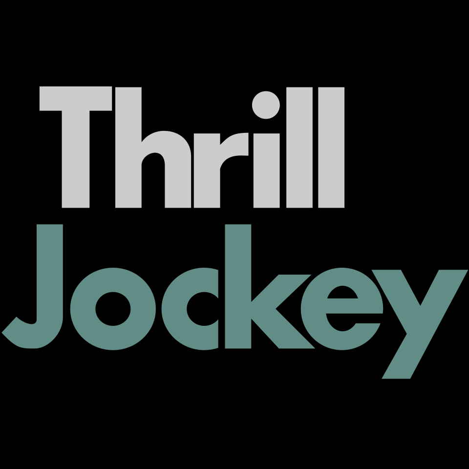
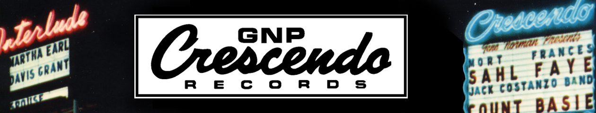

홈 > 브랜드 매거진 > Thrill Jockey
스릴 자키 Thrill Jockey
스릴 자키(Thrill Jockey)는 1992년 베티나 리처즈가 미국에서 설립한 인디 음반 레이블이다. 토터스 등을 배출한 포스트록·실험 인디의 대표 독립 레이블이다.
산업 분야 미디어·엔터테인먼트 · 공개 등급 디렉토리 · 브랜드 평가 3.2 ★

한눈에 보는 브랜드
스릴 자키(Thrill Jockey)는 1992년 베티나 리처즈가 미국에서 설립한 인디 음반 레이블이다. 토터스 등을 배출한 포스트록·실험 인디의 대표 독립 레이블이다.
브랜드 관점
스릴 자키는 토터스를 배출한 포스트록·실험 인디의 대표 독립 레이블이다. 설립·운영 주체, 주력 장르, 대표 아티스트를 함께 보면 미디어·엔터테인먼트 안에서의 위치가 또렷해진다.
시작과 성장
전 애틀랜틱 A&R 베티나 리처즈가 1992년 뉴욕에서 설립해 1995년 시카고로 옮겼다. 포스트록·실험 인디 신을 대표하는 독립 레이블로 자리잡았다.
브랜드 아이덴티티
Thrill Jockey의 아이덴티티는 브랜드명, 로고 사용 여부, 업종 언어, 국가적 배경을 중심으로 정리됩니다. 공개 로고 자산은 추후 권리 확인 후 보강할 수 있도록 텍스트 메타데이터 중심으로 관리합니다.
확장 지식
뉴욕에서 출발해 시카고로 옮긴 독립 레이블로 토터스 등을 배출했다.
제품과 서비스
포스트록·인디·실험 록 음반을 발매한다. 토터스, 더 시 앤 케이크 등이 대표 아티스트다.
사람들
전 애틀랜틱 A&R 베티나 리처즈가 1992년 설립했다.
현재 상태
BI/CI 변천사
자주 묻는 질문
스릴 자키는 어느 나라 브랜드인가요?
스릴 자키는 미국의 미디어·엔터테인먼트 브랜드입니다.
스릴 자키는 언제 설립되었나요?
스릴 자키는 1992년 설립되었습니다.
스릴 자키의 브랜드 아이덴티티는 무엇인가요?
Thrill Jockey의 아이덴티티는 브랜드명, 로고 사용 여부, 업종 언어, 국가적 배경을 중심으로 정리됩니다.
스릴 자키의 대표 제품은 무엇인가요?
포스트록·인디·실험 록 음반을 발매한다.
스릴 자키는 현재 어떤 상태인가요?
국가: 미국(시카고); 형태: 독립 레이블; 산업: 미디어·엔터테인먼트
스릴 자키의 공식 웹사이트는 어디인가요?
스릴 자키의 공식 웹사이트는 https://thrilljockey.com 입니다.
함께 읽을 브랜드
 미디어·엔터테인먼트 · 디렉토리팩토리 레코드(Factory Records)
미디어·엔터테인먼트 · 디렉토리팩토리 레코드(Factory Records)팩토리 레코드(Factory Records)는 1978년 토니 윌슨과 앨런 이래즈머스가 영국 맨체스터에서 설립한 음반 레이블이다. 조이 디비전·뉴 오더를 배출한 포스...
 미디어·엔터테인먼트 · 디렉토리J 레코드
미디어·엔터테인먼트 · 디렉토리J 레코드J 레코드(J Records)는 2000년 클라이브 데이비스가 미국에서 설립한 음반 레이블이다. 얼리샤 키스 등을 배출한 R&B·팝 레이블로, 2011년 RCA로 통...
 미디어·엔터테인먼트 · 디렉토리사이어 레코드(Sire Records)
미디어·엔터테인먼트 · 디렉토리사이어 레코드(Sire Records)사이어 레코드(Sire Records)는 1966년 시모어 스타인과 리처드 고터러가 미국 뉴욕에서 설립한 음반 레이블이다. 라몬즈·토킹 헤즈·마돈나를 배출한 뉴웨이브...
미디어·엔터테인먼트 · 디렉토리잭재규어(Jagjaguwar)잭재규어(Jagjaguwar)는 1996년 대리어스 반 아먼(Darius Van Arman)이 미국에서 설립한 인디 음반 레이블이다. 본 이베어(Bon Iver) 등...
Am
Amphetamine Reptile Records
미디어·엔터테인먼트 · 디렉토리암페타민 렙타일 레코드(Amphetamine Reptile Records)암페타민 렙타일 레코드(Amphetamine Reptile Records)는 1986년 톰 헤이즐마이어가 미국에서 설립한 노이즈록 레이블이다. 헬멧·멜빈스 등을 배출...

미디어·엔터테인먼트 · 디렉토리GNPGNP 크레센도(GNP Crescendo)는 1954년 진 노먼이 미국에서 설립한 음반 레이블이다. 재즈로 출발해 록·사운드트랙으로 확장한 독립 레이블이다.
 미디어·엔터테인먼트 · 디렉토리라우드 레코드(Loud Records)
미디어·엔터테인먼트 · 디렉토리라우드 레코드(Loud Records)라우드 레코드(Loud Records)는 1991년 스티브 리프킨드 등이 미국 뉴욕에서 설립한 힙합 레이블이다. 우탱 클랜을 배출한 1990년대 힙합의 핵심 레이블로...
 미디어·엔터테인먼트 · 디렉토리메가포스 레코드(Megaforce Records)
미디어·엔터테인먼트 · 디렉토리메가포스 레코드(Megaforce Records)메가포스 레코드(Megaforce Records)는 1982년 존·마샤 자줄라 부부가 미국에서 설립한 헤비메탈 레이블이다. 메탈리카의 데뷔작 'Kill 'Em All...